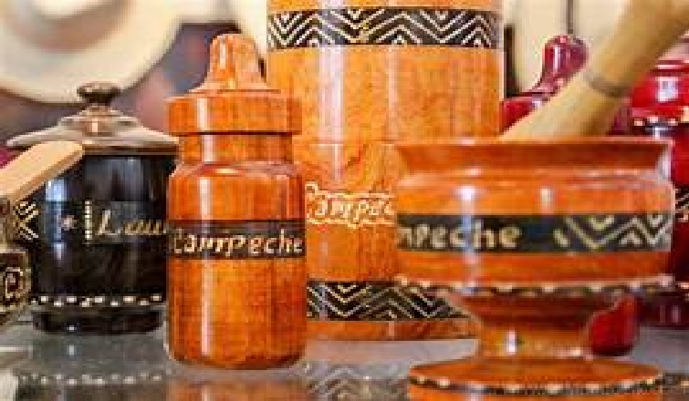
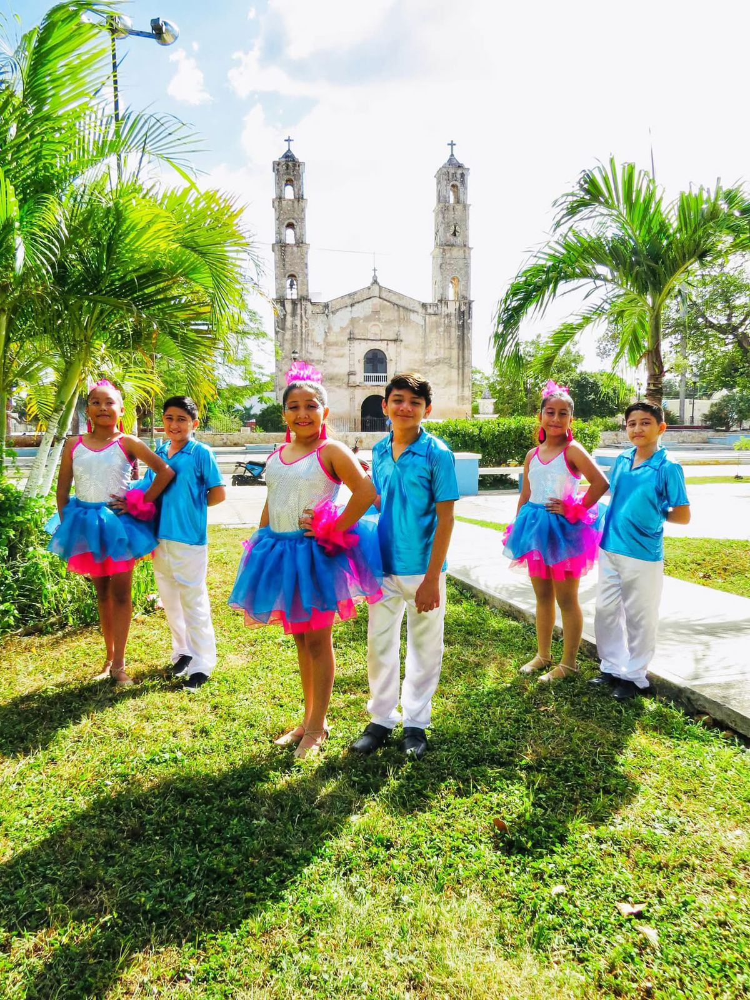
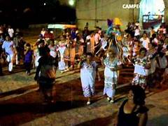
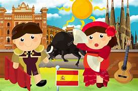

TRADICIONES DE MI LINDO BECALBécal es conocido por su rica tradición en la elaboración de sombreros de jipi, una artesanía que se ha transmitido de generación en generación y que es un símbolo cultural del pueblo. Sombreros de Jipi Bécal, ubicado en el estado de Campeche, es famoso por la producción de sombreros de jipi, un tipo de palma que se cultiva en la región. Esta tradición se remonta al siglo XIX, cuando se comenzó a plantar la palma de jipijapa en las haciendas locales. Los sombreros son elaborados a mano, y el proceso de tejido se realiza en cuevas de piedra caliza, donde la humedad ayuda a conservar las fibras de palma.

La historia de Bécal se remonta a 1450, y su nombre se asocia con el
camino hacia el agua. La plaza principal del pueblo, conocida como la Plaza de
los Sombreros, rinde homenaje a esta actividad productiva y es un lugar de
encuentro para la comunidad. En el centro de la plaza se encuentra una
escultura monumental de sombreros, que simboliza la importancia de esta
artesanía en la economía local.
Además de la producción de sombreros, Bécal ofrece una muestra auténtica de la cultura campechana, que incluye su gastronomía, calles empedradas y casas coloniales. Los visitantes pueden disfrutar de bebidas típicas como la horchata de coco y explorar las cuevas donde se realiza el tejido. La comunidad también celebra diversas festividades que reflejan su herencia maya y su identidad cultural. Bécal es, sin duda, un lugar donde las tradiciones artesanales y la cultura local se entrelazan, ofreciendo a los visitantes una experiencia única y enriquecedora.

TRADICIONES DE BECAL |
|
 |
DIA DE MUERTOS, COMEMORACION A NUESTROS SERES QUERIDOS YA EN DESCANSO ETERNO |
| GREMIOS PARROQUIALES QUEMA DE TORITOS JUEGOS ARTIFICIALES CABEZ DEL COCHINO |
|
 |
CORRIDAS DURANTE LA FFERIA DE BECAL |
 |
ENCUENTRO DE LOS SANTOS DURANTE SU IDA DE LA SRA. DE LA NATIVIDAD DE BECAL 2024 |
PARA MAYOR INF VISITA EL VIDEO
¡EN MI LINDO BECAL ENCONTRARAS VARIAS TRADICIONES POR DESCUBRIR ASI QUE NO TE QUEDES CON LOAS GANAS DE VISITARNOS!
I.MAYO-FERIA BECAL,BAJADA DE LA VIRGEN DE LA NATIVIDAD
II.SEPTIEMBRE-QUEMQ DE TORITOS
III.FEBRERO-CARNAVAL
III.OCTUBRE-DIA DE MUERTOS
Y ENTRE OTROS....
| INICIO |
TRADICIONES |
MIGRACIÓN |
CICLO DEL AGUA |
ALIMENTACION SALUDABLE |